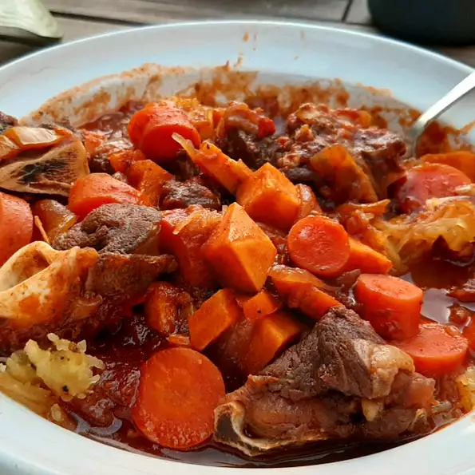

Description
This is based on a Filipino stew recipe called caldereta. It is usually served with rice. I suggest marinating the meat for at least 6 hours. The serving size for this recipe is 2 to 4 depending on how much bone the meat has. Serve over rice. Masarap!
Ingredients
- 1 pound bone-in goat meat, cut into large chunks
- ¼ cup vinegar
- ¼ cup soy sauce
- 4 cloves garlic, crushed
- 1 tablespoon vegetable oil
- 1 onion, chopped
- 1 red bell pepper, cut into 1-inch squares
- 1 cup tomato sauce
- 2 cups beef stock
- 1 potato, peeled and cut into large chunks
- 2 carrots, peeled and cut into large chunks
- ½ cup green peas
- ½ teaspoon salt
- ¼ teaspoon pepper
- 1 pinch cayenne pepper
Steps
- Mix goat meat with vinegar, soy sauce, and garlic in a large bowl; cover and refrigerate from 1 to 8 hours. For best flavor, marinate at least 6 hours. Remove meat from marinade and pat dry with paper towels; reserve marinade and garlic cloves.
- Heat vegetable oil in a large pot over medium-high heat and brown the goat meat, working in batches if necessary, 10 to 15 minutes. Set goat meat aside. Cook and stir onion, red bell pepper, and garlic cloves from the marinade over medium heat until onion is translucent, about 5 minutes; pour in tomato sauce and bring mixture to a simmer. Allow to cook down slightly, about 5 minutes.
-
Return goat meat to the sauce and pour in reserved marinade and beef stock. Bring to a boil, reduce heat to low, and simmer covered until goat meat is partially tender, 30 to 40 minutes. Stir in potato, carrots, and peas; season with salt, black pepper, and cayenne pepper. Simmer until goat meat is very tender and potato and carrots are cooked through, 20 to 30 more minutes. Adjust seasonings before serving.